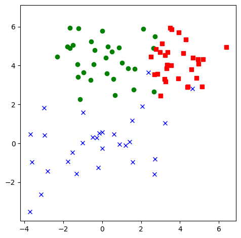
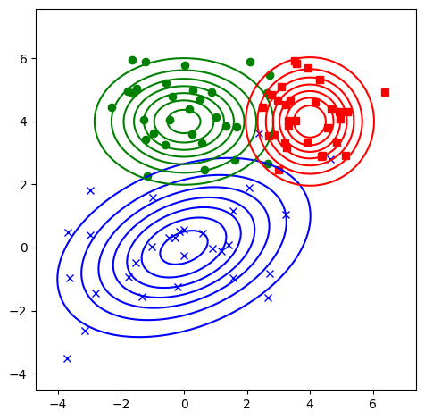
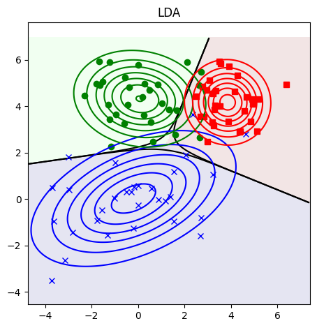
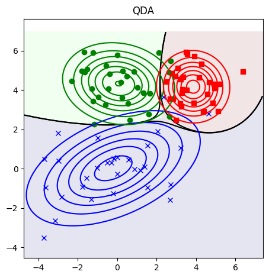

#%pip install ISLPSML 301
Session 5: Dimension Reduction
- Gaussian Discrimant
- Linear Discriminant Analysis
- Quadratic Discriminant Analysis
import numpy as np
import matplotlib.pyplot as plt
from ISLP import load_data, confusion_table
from sklearn.discriminant_analysis import (LinearDiscriminantAnalysis as LDA,
QuadraticDiscriminantAnalysis as QDA)
from sklearn.linear_model import LogisticRegression
from sklearn.metrics import (accuracy_score,
confusion_matrix)
from sklearn.preprocessing import OneHotEncoderGaussian Discriminant Demo
# Gaussian discriminant analysis in 2d
# Author: Duane Rich, heavily modified by Kevin Murphy
# Based on matlab code by Kevin Murphy
# https://github.com/probml/pmtk3/blob/master/demos/discrimAnalysisDboundariesDemo.m
def mvn2d(x, y, u, sigma):
xx, yy = np.meshgrid(x, y)
xy = np.c_[xx.ravel(), yy.ravel()]
sigma_inv = np.linalg.inv(sigma)
z = np.dot((xy - u), sigma_inv)
z = np.sum(z * (xy - u), axis=1)
z = np.exp(-0.5 * z)
z = z / (2 * np.pi * np.linalg.det(sigma) ** 0.5)
return z.reshape(xx.shape)
# Each model specifies the means and covariances.
# If the covariances are equal across classes, dboundarioes
# will be linear even if we use QDA
def is_pos_def(x):
return np.all(np.linalg.eigvals(x) > 0)
Sigma1 = np.array([[4, 1], [1, 2]])
Sigma2 = np.array([[2, 0], [0, 1]])
Sigma3 = np.eye(2)
mus = [[0, 0], [0, 4], [4, 4]]
sigmas = [Sigma1, Sigma2, Sigma3]
# model = ([[0, 0], [0, 4], [4, 4]], [Sigma1, Sigma2, Sigma3])
ngrid = 200
n_samples = 30 # 300 # number of each class samples
model_names = ("LDA", "QDA")
np.random.seed(0)
def make_data(mu, sigma):
# generate random points
x = [] # store sample points
labels = [] # store class labels
nclasses = len(mu) # means
for i in range(nclasses):
x.append(np.random.multivariate_normal(mu[i], sigma[i], n_samples))
labels.append([i] * n_samples)
return x, labels
def make_grid(x):
points = np.vstack(x)
x_min, y_min = np.min(points, axis=0)
x_max, y_max = np.max(points, axis=0)
x_range = np.linspace(x_min - 1, x_max + 1, ngrid)
y_range = np.linspace(y_min - 1, y_max + 1, ngrid)
xx, yy = np.meshgrid(x_range, y_range)
return xx, yy, x_range, y_range
def plot_dboundaries(xx, yy, z, z_p):
plt.pcolormesh(xx, yy, z, alpha=0.1)
plt.jet()
nclasses = z_p.shape[1]
for j in range(nclasses):
plt.contour(xx, yy, z_p[:, j].reshape(ngrid, ngrid), [0.5], lw=3, colors="k")
def plot_points(x):
c = "bgr"
m = "xos"
for i, point in enumerate(x):
N = point.shape[0]
nplot = min(N, 30)
plt.plot(point[:nplot, 0], point[:nplot, 1], c[i] + m[i])
def plot_contours(xx, yy, x_range, y_range, u, sigma):
nclasses = len(u)
c = "bgr"
m = "xos"
for i in range(nclasses):
prob = mvn2d(x_range, y_range, u[i], sigma[i])
cs = plt.contour(xx, yy, prob, colors=c[i])
def make_one_hot(yhat):
yy = yhat.reshape(-1, 1) # make 2d
enc = OneHotEncoder()
Y = enc.fit_transform(yy)
return Y
def estimate_mvns(X, Y):
classes = np.unique(Y)
mus = []
sigmas = []
for c in classes:
ndx = Y == c
Xc = X[ndx]
mu_c = np.mean(Xc, axis=0)
Sigma_c = np.cov(Xc, rowvar=False)
mus.append(mu_c)
sigmas.append(Sigma_c)
return mus, sigmas
def estimate_mvn_tied(X, Y):
classes = np.unique(Y)
nclasses = len(classes)
Sigma = np.cov(X, rowvar=False)
sigmas = [Sigma] * nclasses
mus = []
for c in classes:
ndx = Y == c
Xc = X[ndx]
mu_c = np.mean(Xc, axis=0)
mus.append(mu_c)
return mus, sigmas
def fit_and_plot(clf, name, mus, sigmas):
clf.fit(X, Y)
z = clf.predict(np.c_[xx.ravel(), yy.ravel()])
z = z.reshape(ngrid, ngrid)
z_p = clf.predict_proba(np.c_[xx.ravel(), yy.ravel()])
yhat = clf.predict(np.c_[xx.ravel(), yy.ravel()])
Yhat = make_one_hot(yhat)
plt.figure()
plot_dboundaries(xx, yy, z, z_p)
# plot_dboundaries(xx, yy, z, Yhat)
plot_points(x)
plot_contours(xx, yy, x_range, y_range, mus, sigmas)
plt.title(name)
plt.axis("square")
plt.tight_layout()
#savefig("gda_2d_{}.pdf".format(name))
plt.show()x, labels = make_data(mus, sigmas)
xx, yy, x_range, y_range = make_grid(x)
X = np.vstack(x)
Y = np.hstack(labels)
plt.figure()
plot_points(x)
plt.axis("square")
plt.tight_layout()
#savefig("gda_2d_data.pdf")
plt.show()
plt.figure()
plot_points(x)
plot_contours(xx, yy, x_range, y_range, mus, sigmas)
plt.axis("square")
plt.tight_layout()
#savefig("gda_2d_contours.pdf")
plt.show()

Linear Discriminant Analysis
mus_est, sigmas_est = estimate_mvns(X, Y)
fit_and_plot(LDA(), "LDA", mus_est, sigmas_est)<positron-console-cell-4>:66: UserWarning: The following kwargs were not used by contour: 'lw'
fit_and_plot(QDA(), "QDA", mus_est, sigmas_est)<positron-console-cell-5>:66: UserWarning: The following kwargs were not used by contour: 'lw'
Classification Workflow
# data set: stock market (from ISLP)
smarket_df = load_data("Smarket")
historical_data = smarket_df.loc[(smarket_df.Year < 2005)]
future_data = smarket_df.loc[(smarket_df.Year == 2005)]
X_train = historical_data[['Lag1']]
X_test = future_data[['Lag1']]
y_train = historical_data['Direction']
y_test = future_data['Direction']
smarket_df.head()| Year | Lag1 | Lag2 | Lag3 | Lag4 | Lag5 | Volume | Today | Direction | |
|---|---|---|---|---|---|---|---|---|---|
| 0 | 2001 | 0.381 | -0.192 | -2.624 | -1.055 | 5.010 | 1.1913 | 0.959 | Up |
| 1 | 2001 | 0.959 | 0.381 | -0.192 | -2.624 | -1.055 | 1.2965 | 1.032 | Up |
| 2 | 2001 | 1.032 | 0.959 | 0.381 | -0.192 | -2.624 | 1.4112 | -0.623 | Down |
| 3 | 2001 | -0.623 | 1.032 | 0.959 | 0.381 | -0.192 | 1.2760 | 0.614 | Up |
| 4 | 2001 | 0.614 | -0.623 | 1.032 | 0.959 | 0.381 | 1.2057 | 0.213 | Up |
Logistic Regression
log_reg_model = LogisticRegression()
log_reg_model.fit(X_train, y_train)
y_pred = log_reg_model.predict(X_test)
print(confusion_matrix(y_test, y_pred))
print("Accuracy: ", accuracy_score(y_test, y_pred))[[ 20 91]
[ 25 116]]
Accuracy: 0.5396825396825397Linear Discriminant Analysis
LDA_model = LDA(store_covariance=True)
LDA_model.fit(X_train, y_train)
y_pred = LDA_model.predict(X_test)
print(confusion_matrix(y_test, y_pred))
print("Accuracy: ", accuracy_score(y_test, y_pred))[[ 20 91]
[ 25 116]]
Accuracy: 0.5396825396825397Quadratic Discriminant Analysis
QDA_model = QDA(store_covariance=True)
QDA_model.fit(X_train, y_train)
y_pred = QDA_model.predict(X_test)
print(confusion_matrix(y_test, y_pred))
print("Accuracy: ", accuracy_score(y_test, y_pred))[[ 25 86]
[ 27 114]]
Accuracy: 0.5515873015873016